Web Server Statistics for demo3.acharmela.com
Web Server Statistics for demo3.acharmela.com
Program started on Sun, Aug 31 2025 at 12:00 PM.
Analyzed requests from Sun, Jul 06 2025 at 9:58 AM to Sat, Aug 30 2025 at 12:13 PM (55.09 days).
Web Server Statistics for demo3.acharmela.comProgram started on Sun, Aug 31 2025 at 12:00 PM.
Analyzed requests from Sun, Jul 06 2025 at 9:58 AM to Sat, Aug 30 2025 at 12:13 PM (55.09 days).
(Go To: Top | General Summary | Monthly Report | Daily Summary | Hourly Summary | Domain Report | Organization Report | Redirected Referrer Report | Failed Referrer Report | Referring Site Report | Browser Report | Browser Summary | Operating System Report | Status Code Report | File Size Report | File Type Report | Directory Report | Request Report)
Figures in parentheses refer to the 7-day period ending Aug 31 2025 at 12:00 PM.
Successful requests: 733 (15)
Average successful requests per day: 13 (2)
Successful requests for pages: 171 (13)
Average successful requests for pages per day: 3 (1)
Failed requests: 348 (0)
Redirected requests: 2 (0)
Distinct files requested: 169 (287)
Distinct hosts served: 181 (242)
Data transferred: 29.57 megabytes (1.06 megabytes)
Average data transferred per day: 549.63 kilobytes (154.47 kilobytes)
(Go To: Top | General Summary | Monthly Report | Daily Summary | Hourly Summary | Domain Report | Organization Report | Redirected Referrer Report | Failed Referrer Report | Referring Site Report | Browser Report | Browser Summary | Operating System Report | Status Code Report | File Size Report | File Type Report | Directory Report | Request Report)
Each unit ( ) represents 4 requests for pages or part thereof.
) represents 4 requests for pages or part thereof.
| month | #reqs | #pages | |
|---|---|---|---|
| Jul 2025 | 441 | 124 |     |
| Aug 2025 | 292 | 47 | |
Busiest month: Jul 2025 (124 requests for pages).
(Go To: Top | General Summary | Monthly Report | Daily Summary | Hourly Summary | Domain Report | Organization Report | Redirected Referrer Report | Failed Referrer Report | Referring Site Report | Browser Report | Browser Summary | Operating System Report | Status Code Report | File Size Report | File Type Report | Directory Report | Request Report)
Each unit () represents 2 requests for pages or part thereof.
| day | #reqs | #pages | |
|---|---|---|---|
| Sun | 128 | 49 | |
| Mon | 135 | 33 | |
| Tue | 187 | 14 | |
| Wed | 137 | 31 | |
| Thu | 18 | 9 | |
| Fri | 55 | 17 | |
| Sat | 73 | 18 | |
(Go To: Top | General Summary | Monthly Report | Daily Summary | Hourly Summary | Domain Report | Organization Report | Redirected Referrer Report | Failed Referrer Report | Referring Site Report | Browser Report | Browser Summary | Operating System Report | Status Code Report | File Size Report | File Type Report | Directory Report | Request Report)
Each unit () represents 1 request for a page.
| hour | #reqs | #pages | |
|---|---|---|---|
| 0 | 7 | 1 | |
| 1 | 10 | 6 | |
| 2 | 27 | 12 | |
| 3 | 9 | 6 | |
| 4 | 3 | 1 | |
| 5 | 90 | 7 | |
| 6 | 12 | 4 | |
| 7 | 14 | 8 | |
| 8 | 33 | 13 | |
| 9 | 17 | 11 | |
| 10 | 208 | 31 | |
| 11 | 13 | 11 | |
| 12 | 10 | 8 | |
| 13 | 5 | 5 | |
| 14 | 61 | 13 | |
| 15 | 93 | 7 | |
| 16 | 64 | 2 | |
| 17 | 20 | 6 | |
| 18 | 2 | 2 | |
| 19 | 8 | 6 | |
| 20 | 10 | 6 | |
| 21 | 7 | 2 | |
| 22 | 7 | 2 | |
| 23 | 3 | 1 | |
(Go To: Top | General Summary | Monthly Report | Daily Summary | Hourly Summary | Domain Report | Organization Report | Redirected Referrer Report | Failed Referrer Report | Referring Site Report | Browser Report | Browser Summary | Operating System Report | Status Code Report | File Size Report | File Type Report | Directory Report | Request Report)
Listing domains, sorted by the amount of traffic.
| #reqs | %bytes | domain |
|---|---|---|
| 733 | 100% | [unresolved numerical addresses] |
(Go To: Top | General Summary | Monthly Report | Daily Summary | Hourly Summary | Domain Report | Organization Report | Redirected Referrer Report | Failed Referrer Report | Referring Site Report | Browser Report | Browser Summary | Operating System Report | Status Code Report | File Size Report | File Type Report | Directory Report | Request Report)
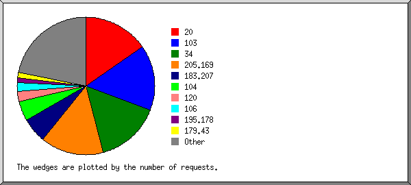
Listing the top 20 organizations by the number of requests, sorted by the number of requests.
| #reqs | %bytes | organization |
|---|---|---|
| 188 | 34.43% | 103 |
| 154 | 23.76% | 20 |
| 66 | 15.32% | 205.169 |
| 41 | 6.20% | 120 |
| 20 | 0.13% | 179.43 |
| 18 | 2.02% | 101 |
| 14 | 0.07% | 106 |
| 13 | 0.17% | 199.45 |
| 12 | 6.97% | 198.235 |
| 10 | 0.03% | 52 |
| 9 | 4 | |
| 8 | 0.36% | 3 |
| 8 | 4.43% | 205.210 |
| 8 | 0.03% | 37 |
| 8 | 0.16% | 149.57 |
| 7 | 0.03% | 194.163 |
| 7 | 0.11% | 23 |
| 7 | 0.02% | 152.32 |
| 6 | 0.01% | 195.211 |
| 6 | 0.20% | 104 |
| 123 | 5.56% | [not listed: 51 organizations] |
(Go To: Top | General Summary | Monthly Report | Daily Summary | Hourly Summary | Domain Report | Organization Report | Redirected Referrer Report | Failed Referrer Report | Referring Site Report | Browser Report | Browser Summary | Operating System Report | Status Code Report | File Size Report | File Type Report | Directory Report | Request Report)
Listing referring URLs, sorted by the number of redirected requests.
| #reqs | URL |
|---|---|
| 1 | https://demo3.acharmela.com/product/2025-full-new-desktop-computer-intel-core-i5-ram-8gb-ssd-120gb-hdd-500gb-graphics-2gb-built-in-gaming-pc-win-11-64-bit-and-17-19-22-inch-monitor-192 |
(Go To: Top | General Summary | Monthly Report | Daily Summary | Hourly Summary | Domain Report | Organization Report | Redirected Referrer Report | Failed Referrer Report | Referring Site Report | Browser Report | Browser Summary | Operating System Report | Status Code Report | File Size Report | File Type Report | Directory Report | Request Report)
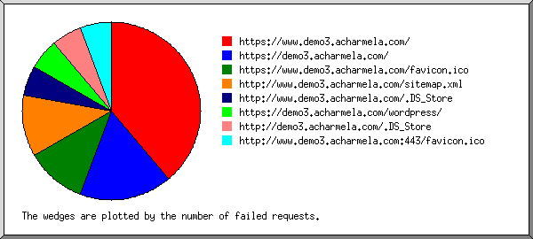
Listing referring URLs, sorted by the number of failed requests.
(Go To: Top | General Summary | Monthly Report | Daily Summary | Hourly Summary | Domain Report | Organization Report | Redirected Referrer Report | Failed Referrer Report | Referring Site Report | Browser Report | Browser Summary | Operating System Report | Status Code Report | File Size Report | File Type Report | Directory Report | Request Report)
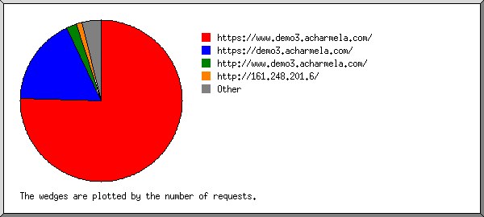
Listing referring sites, sorted by the number of requests.
| #reqs | site |
|---|---|
| 158 | https://demo3.acharmela.com/ |
| 121 | https://www.demo3.acharmela.com/ |
| 11 | http://www.demo3.acharmela.com/ |
| 6 | http://161.248.201.6/ |
| 4 | http://www.demo3.acharmela.com:443/ |
| 3 | https://acharmela.com:2083/ |
| 1 | https://bucur.info/ |
| 1 | http://demo3.acharmela.com/ |
| 1 | https://gselect-assurances.fr/ |
| 1 | http://218.92.148.105:44818/ |
| 1 | http://m.fffiewu.cn/ |
(Go To: Top | General Summary | Monthly Report | Daily Summary | Hourly Summary | Domain Report | Organization Report | Redirected Referrer Report | Failed Referrer Report | Referring Site Report | Browser Report | Browser Summary | Operating System Report | Status Code Report | File Size Report | File Type Report | Directory Report | Request Report)
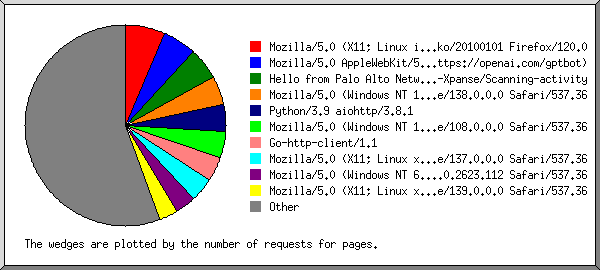
Listing the top 40 browsers by the number of requests for pages, sorted by the number of requests for pages.
| #reqs | #pages | browser |
|---|---|---|
| 15 | 15 | Mozilla/5.0 (X11; Linux i686; rv:109.0) Gecko/20100101 Firefox/120.0 |
| 197 | 11 | Mozilla/5.0 (Windows NT 10.0; Win64; x64) AppleWebKit/537.36 (KHTML, like Gecko) Chrome/138.0.0.0 Safari/537.36 |
| 10 | 10 | Python/3.9 aiohttp/3.8.1 |
| 10 | 10 | Hello from Palo Alto Networks, find out more about our scans in https://docs-cortex.paloaltonetworks.com/r/1/Cortex-Xpanse/Scanning-activity |
| 11 | 8 | Mozilla/5.0 (X11; Linux x86_64) AppleWebKit/537.36 (KHTML, like Gecko) Chrome/137.0.0.0 Safari/537.36 |
| 163 | 7 | Mozilla/5.0 AppleWebKit/537.36 (KHTML, like Gecko; compatible; GPTBot/1.2; +https://openai.com/gptbot) |
| 6 | 6 | Mozilla/5.0 zgrab/0.x |
| 16 | 6 | Mozilla/5.0 (Macintosh; Intel Mac OS X 10_7_0) AppleWebKit/535.11 (KHTML, like Gecko) Chrome/17.0.963.56 Safari/535.11 |
| 6 | 6 | Mozilla/5.0 (Windows NT 10.0; Win64; x64) AppleWebKit/537.36 (KHTML, like Gecko) Chrome/108.0.0.0 Safari/537.36 |
| 5 | 5 | Mozilla/5.0 (Macintosh; Intel Mac OS X 10_15_7) AppleWebKit/537.36 (KHTML, like Gecko) Chrome/120.0.0.0 Safari/537.36 Edg/120.0.0.0 |
| 5 | 5 | Go-http-client/1.1 |
| 4 | 4 | Mozilla/5.0 (Windows NT 10.0; Win64; x64) AppleWebKit/537.36 (KHTML, like Gecko) Chrome/104.0.0.0 Safari/537.36 |
| 20 | 4 | Mozilla/5.0 (compatible; CensysInspect/1.1; +https://about.censys.io/) |
| 4 | 4 | Mozilla/5.0 (Linux; Android 15; I2201 Build/AP3A.240905.015.A2; wv) AppleWebKit/537.36 (KHTML, like Gecko) Version/4.0 Chrome/132.0.6834.90 Mobile Safari/537.36 [FB_IAB/FB4A;FBAV/496.0.0.45.65;IABMV/1;] FBNV/5 |
| 5 | 3 | Mozilla/5.0 (X11; Linux x86_64) AppleWebKit/537.36 (KHTML, like Gecko) Chrome/139.0.0.0 Safari/537.36 |
| 3 | 3 | Mozilla/5.0 (Macintosh; Intel Mac OS X 10_15_7) AppleWebKit/537.36 (KHTML, like Gecko) Chrome/85.0.4183.121 Safari/537.36 |
| 3 | 3 | Mozilla/5.0 (Macintosh; Intel Mac OS X 10_15_7) AppleWebKit/537.36 (KHTML, like Gecko) Chrome/136.0.0.0 Safari/537.36 |
| 3 | 3 | curl/7.4.0 |
| 6 | 3 | Mozilla/5.0 (compatible; InternetMeasurement/1.0; +https://internet-measurement.com/) |
| 4 | 2 | Mozilla/5.0 (Windows NT 6.1) AppleWebKit/537.36 (KHTML, like Gecko) Chrome/49.0.2623.112 Safari/537.36 |
| 5 | 2 | Mozilla/5.0 (Linux; Android 6.0; Nexus 5 Build/MRA58N) AppleWebKit/537.36 (KHTML, like Gecko) Chrome/130.0.0.0 Mobile Safari/537.36 |
| 2 | 2 | python-requests/2.32.3 |
| 2 | 2 | Mozilla/5.0 (X11; Linux i686; rv:124.0) Gecko/20100101 Firefox/124.0 |
| 2 | 2 | Mozilla/5.0 (Windows NT 10.0; Win64; x64) AppleWebKit/537.36 (KHTML, like Gecko) Chrome/137.0.0.0 Safari/537.36 |
| 1 | 1 | Mozilla/5.0 (Windows NT 11.0; Win64; x64) AppleWebKit/537.36 (KHTML, like Gecko) Chrome/126.0.0.0 Safari/537.36 Edg/126.0.0.0 |
| 5 | 1 | Mozilla/5.0 (X11; Linux x86_64) AppleWebKit/537.36 (KHTML, like Gecko) Chrome/132.0.0.0 Safari/537.36 |
| 1 | 1 | Mozilla/5.0 (Macintosh; Intel Mac OS X 10_9_2) AppleWebKit/537.36 (KHTML, like Gecko) Chrome/33.0.1750.152 Safari/537.36 |
| 39 | 1 | Mozilla/5.0 (Linux; Android 7.0; SM-G950U Build/NRD90M) AppleWebKit/537.36 (KHTML, like Gecko) Chrome/125.0.6422.26 Mobile Safari/537.36 |
| 1 | 1 | Mozilla/5.0 (Macintosh; Intel Mac OS X 10_14_6) AppleWebKit/537.36 (KHTML, like Gecko) Chrome/75.0.3770.100 Safari/537.36 |
| 2 | 1 | Mozilla/5.0 (X11; Linux x86_64; rv:139.0) Gecko/20100101 Firefox/139.0 |
| 1 | 1 | Mozilla/5.0 (Windows NT 10.0; Win64; x64) AppleWebKit/537.36 (KHTML, like Gecko) Chrome/124.0.0.0 Safari/537.36 |
| 1 | 1 | Scrapy/2.12.0 (+https://scrapy.org) |
| 1 | 1 | Mozilla/5.0 (Linux; U; Android 2.3.3; ko-kr; SHW-M250S Build/GINGERBREAD) AppleWebKit/533.1 (KHTML, like Gecko) Version/4.0 Mobile Safari/533.1 |
| 1 | 1 | Opera/9.80 (Windows NT 5.1; U; zh-tw) Presto/2.8.131 Version/11.10 |
| 1 | 1 | Mozilla/5.0 (Macintosh; Intel Mac OS X 10_10_5) AppleWebKit/603.3.8 (KHTML, like Gecko) Version/10.1.2 Safari/603.3.8 |
| 2 | 1 | Mozilla/5.0 (compatible; wpbot/1.3; +https://forms.gle/ajBaxygz9jSR8p8G9) |
| 1 | 1 | Mozilla/5.0 (X11; Linux x86_64; rv:83.0) Gecko/20100101 Firefox/83.0 |
| 5 | 1 | Mozilla/5.0 (Macintosh; Intel Mac OS X 10_15_7) AppleWebKit/537.36 (KHTML, like Gecko) Chrome/129.0.0.0 Safari/537.36 |
| 1 | 1 | Mozilla/5.0 (Linux; Android 9; SM-A530F) AppleWebKit/537.36 (KHTML, like Gecko) Chrome/76.0.3809.111 Mobile Safari/537.36 |
| 1 | 1 | Mozilla/5.0 (compatible; NetcraftSurveyAgent/1.0; +info@netcraft.com) |
| 144 | 11 | [not listed: 49 browsers] |
(Go To: Top | General Summary | Monthly Report | Daily Summary | Hourly Summary | Domain Report | Organization Report | Redirected Referrer Report | Failed Referrer Report | Referring Site Report | Browser Report | Browser Summary | Operating System Report | Status Code Report | File Size Report | File Type Report | Directory Report | Request Report)
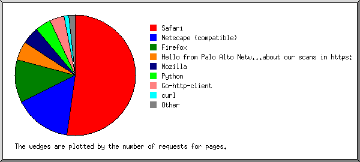
Listing browsers with at least 1 request for a page, sorted by the number of requests for pages.
| # | #reqs | #pages | browser |
|---|---|---|---|
| 1 | 435 | 76 | Safari |
| 413 | 66 | Safari/537 | |
| 16 | 6 | Safari/535 | |
| 1 | 1 | Safari/601 | |
| 1 | 1 | Safari/603 | |
| 1 | 1 | Safari/605 | |
| 1 | 1 | Safari/533 | |
| 2 | 31 | 21 | Firefox |
| 16 | 16 | Firefox/120 | |
| 3 | 2 | Firefox/124 | |
| 1 | 1 | Firefox/83 | |
| 1 | 1 | Firefox/137 | |
| 4 | 1 | Firefox/139 | |
| 3 | 193 | 17 | Netscape (compatible) |
| 4 | 10 | 10 | Python |
| 10 | 10 | Python/3 | |
| 5 | 10 | 10 | Hello from Palo Alto Networks, find out more about our scans in https: |
| 10 | 10 | Hello from Palo Alto Networks, find out more about our scans in https://docs-cortex | |
| 6 | 12 | 7 | Mozilla |
| 1 | 1 | Mozilla/1 | |
| 7 | 5 | 5 | Go-http-client |
| 5 | 5 | Go-http-client/1 | |
| 8 | 3 | 3 | curl |
| 3 | 3 | curl/7 | |
| 9 | 2 | 2 | python-requests |
| 2 | 2 | python-requests/2 | |
| 10 | 1 | 1 | Scrapy |
| 1 | 1 | Scrapy/2 | |
| 11 | 2 | 1 | Opera |
| 2 | 1 | Opera/9 | |
| 11 | 0 | [not listed: 8 browsers] |
(Go To: Top | General Summary | Monthly Report | Daily Summary | Hourly Summary | Domain Report | Organization Report | Redirected Referrer Report | Failed Referrer Report | Referring Site Report | Browser Report | Browser Summary | Operating System Report | Status Code Report | File Size Report | File Type Report | Directory Report | Request Report)
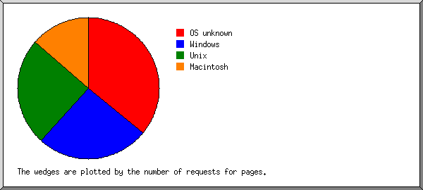
Listing operating systems, sorted by the number of requests for pages.
| # | #reqs | #pages | OS |
|---|---|---|---|
| 1 | 242 | 55 | OS unknown |
| 2 | 111 | 44 | Unix |
| 110 | 44 | Linux | |
| 1 | 0 | BSD | |
| 3 | 307 | 30 | Windows |
| 297 | 27 | Windows NT | |
| 7 | 2 | Unknown Windows | |
| 3 | 1 | Windows XP | |
| 4 | 54 | 24 | Macintosh |
| 5 | 1 | 0 | Known robots |
(Go To: Top | General Summary | Monthly Report | Daily Summary | Hourly Summary | Domain Report | Organization Report | Redirected Referrer Report | Failed Referrer Report | Referring Site Report | Browser Report | Browser Summary | Operating System Report | Status Code Report | File Size Report | File Type Report | Directory Report | Request Report)
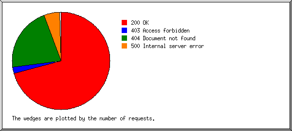
Listing status codes, sorted numerically.
| #reqs | status code |
|---|---|
| 733 | 200 OK |
| 1 | 301 Document moved permanently |
| 1 | 302 Document found elsewhere |
| 29 | 403 Access forbidden |
| 263 | 404 Document not found |
| 3 | 405 Method not allowed |
| 53 | 500 Internal server error |
(Go To: Top | General Summary | Monthly Report | Daily Summary | Hourly Summary | Domain Report | Organization Report | Redirected Referrer Report | Failed Referrer Report | Referring Site Report | Browser Report | Browser Summary | Operating System Report | Status Code Report | File Size Report | File Type Report | Directory Report | Request Report)
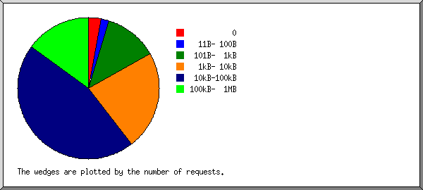
| size | #reqs | %bytes |
|---|---|---|
| 0 | 25 | |
| 1B- 10B | 0 | |
| 11B- 100B | 21 | |
| 101B- 1kB | 153 | 0.29% |
| 1kB- 10kB | 167 | 2.60% |
| 10kB-100kB | 279 | 21.37% |
| 100kB- 1MB | 88 | 75.74% |
(Go To: Top | General Summary | Monthly Report | Daily Summary | Hourly Summary | Domain Report | Organization Report | Redirected Referrer Report | Failed Referrer Report | Referring Site Report | Browser Report | Browser Summary | Operating System Report | Status Code Report | File Size Report | File Type Report | Directory Report | Request Report)
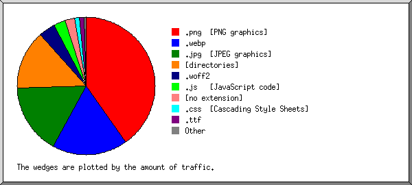
Listing extensions with at least 0.1% of the traffic, sorted by the amount of traffic.
| #reqs | %bytes | extension |
|---|---|---|
| 25 | 37.01% | .png [PNG graphics] |
| 171 | 19.97% | [directories] |
| 140 | 16.03% | .webp |
| 41 | 14.51% | .jpg [JPEG graphics] |
| 13 | 3.66% | .woff2 |
| 112 | 3.06% | [no extension] |
| 111 | 1.99% | .js [JavaScript code] |
| 8 | 1.90% | .ttf |
| 68 | 1.34% | .css [Cascading Style Sheets] |
| 10 | 0.38% | .jpeg [JPEG graphics] |
| 34 | 0.15% | [not listed: 6 extensions] |
(Go To: Top | General Summary | Monthly Report | Daily Summary | Hourly Summary | Domain Report | Organization Report | Redirected Referrer Report | Failed Referrer Report | Referring Site Report | Browser Report | Browser Summary | Operating System Report | Status Code Report | File Size Report | File Type Report | Directory Report | Request Report)
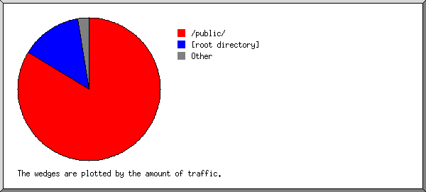
Listing directories with at least 0.01% of the traffic, sorted by the amount of traffic.
| #reqs | %bytes | directory |
|---|---|---|
| 367 | 76.58% | /public/ |
| 212 | 20.01% | [root directory] |
| 20 | 0.90% | /product/ |
| 23 | 0.78% | /category/ |
| 17 | 0.55% | /subcategory/ |
| 18 | 0.50% | /page/ |
| 10 | 0.32% | /customer/ |
| 53 | 0.25% | /_autoindex/ |
| 3 | 0.09% | /site/ |
| 10 | 0.01% | [not listed: 3 directories] |
(Go To: Top | General Summary | Monthly Report | Daily Summary | Hourly Summary | Domain Report | Organization Report | Redirected Referrer Report | Failed Referrer Report | Referring Site Report | Browser Report | Browser Summary | Operating System Report | Status Code Report | File Size Report | File Type Report | Directory Report | Request Report)
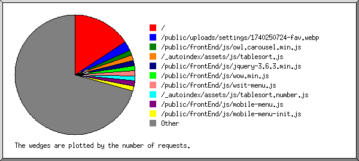
Listing files with at least 20 requests, sorted by the number of requests.
| #reqs | %bytes | last time | file |
|---|---|---|---|
| 171 | 19.97% | Aug/30/25 12:13 PM | / |
| 12 | 2.36% | Aug/30/25 12:13 PM | /?46.101.1.225 |
| 24 | 0.21% | Jul/14/25 5:23 AM | /_autoindex/assets/js/tablesort.js |
| 24 | 0.06% | Aug/29/25 3:27 PM | /public/uploads/settings/1740250724-fav.webp |
| 22 | 0.03% | Jul/14/25 5:23 AM | /_autoindex/assets/js/tablesort.number.js |
| 492 | 79.73% | Aug/26/25 10:18 AM | [not listed: 152 files] |